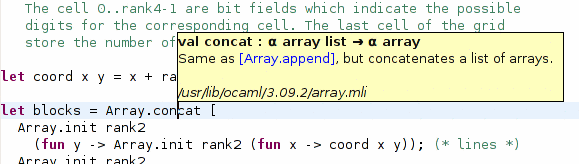

You can display an information pop-up on modules or elements from modules by typing the F2 key (configurable in the preferences).

This pop-up displays informations extracted from the interface (mli) files, together with the documentation comments, so if you want more information to be displayed, you can add ocamldoc comments to your definitions in your mli files.
Note: for this feature to work, the path of the OCaml standard library must be defined in the preferences (see Configuring paths), along with the paths used in the project (see Configuring project paths).